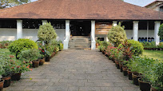
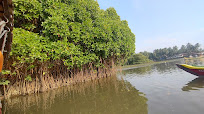
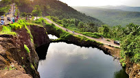

Pazhassi Raja Archaeological Museum

A veritable treasure trove for historians and connoisseurs of art, the Pazhassi Raja Museum is located in Kozhikode. The Pazhassi Raja Museum & Art Gallery adjacent to the museum displays the acclaimed paintings of Kerala's cherished artists, Raja Ravi Varma (1848 - 1906) whose works brought international repute to the State and his uncle Raja Raja Varma.
The museum is managed by the State Archaeology Department and has on display mural paintings, antique bronzes, ancient coins, models of temples, umbrella stones, dolmenoid cists (quadrangular burial chambers with capstones), and similar megalithic monuments.
Kadalundi Bird Sanctuary

A cluster of scenic islands, beautiful hills and rare avian species would intrigue and entice every birdwatcher on the planet. This is exactly what the Kadalundi Bird Sanctuary has to offer its visitors. One is greeted by the Kadalundi River flowing into the Arabian Sea while migratory birds casually flit about.
Tali Maha Shiva Kshetram

Tali Shiva Temple or Tali Mahakshetram is a Hindu temple dedicated to the deity Shiva, situated in the heart of the Kozhikode city, Kerala. The temple was built in the 14th century by Zamorin of Calicut. Tali Kshetram is an ancient temple in the heart of Kozhikode town. Shiva is the presiding deity.